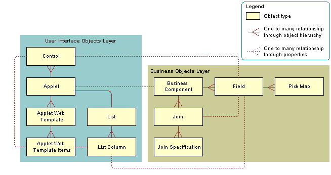
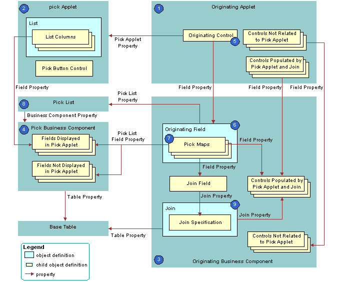

How Siebel CRM Creates a Dynamic List
The following figure describes the relationships between object types that Siebel CRM uses to create a dynamic list.
The following figure describes the objects that Siebel CRM uses to create a dynamic list.
Explanation of Callouts
Siebel CRM uses the following objects to create a dynamic list:
Originating applet. Contains the control or list column that calls the pick applet. After Siebel CRM calls the pick applet and chooses a value, it displays revised values in specific controls in the originating applet. In the example, the Opportunity Form Applet is the originating applet. For more information, see Originating Applet of a Dynamic List.
Pick applet. Dialog box that Siebel CRM calls to choose a value. The dialog box is a list applet that contains a scrolling list table of rows. Each row corresponds to a business component record. In the example, the Account applet is the pick applet.
Originating business component. Business component of the originating applet. This business component supplies the data that Siebel CRM displays in the originating applet. The selection process in the pick applet causes Siebel CRM to update the current record in this business component. In the example, the Opportunity Form Applet is the originating applet and it references the Opportunity business component.
Pick business component. Business component of the pick applet. Data from fields in this business component display in the list columns of the pick applet. In the example, the Account business component is the pick business component.
Originating control or originating list column. If the user clicks the originating control or list column, then the originating control or list column calls the pick applet. In the example, the Account control is the originating control.
Originating field. Field in the originating business component that the originating control references. It includes child pick maps that define how Siebel CRM maps fields from the pick business component to the originating business component. In the example, the Account field is the originating field.
Pick maps. Each pick map defines a relationship between a field in the pick business component and a field in the originating business component. If the user chooses a record, then these relationships provide the information that Siebel CRM requires to update the current, originating business component record with information from the pick business component record.
If the user chooses a value from an unbounded list, then Siebel CRM uses the corresponding pick map that references the same field that it uses to copy the value to the field that it associates with the list. If the list is bounded, then Siebel CRM only enters data into fields that it associates with other child pick maps.
Entering a new value in an unbounded list does not cause Siebel CRM to display the value in the list of values that the user can choose. It does not update fields in a pick map if the user chooses a value from an unbounded list. An applet that references the CSSBuscomp or the CSSBCBase class with an unbounded list does not map all the values in the pick map. To map all the values in a pick map, the list must be bounded.
Pick list. References the business component of the pick applet. In the example, the PickList Opportunity Account pick list is the list.
Join and join specification. The join is a child of the originating business component. The join specification is a child of the join. The join field references this child object. One of the pick maps updates the join field. If Siebel CRM modifies the value in the join field, then it updates all fields whose values it gets from the join. This update is not as immediate as the update that it does through the pick map. If the other pick maps are absent, then Siebel CRM does not update the data until the user navigates away from the view, and then returns to the view. In the example, S_ORG_EXT is the join and Account Id is the join specification.